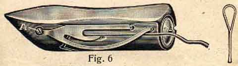

Every Sewing Machine sent out from the factory is made of the best material and most carefully adjusted, so that after careful unpacking it can be used at once. But before beginning to sew, it is advisable to read these instructions carefully through first, even if you are experienced with the machine.
All the bright parts of the machine are well greased before it is sent off, so as to prevent rusting. When the machine is unpacked, wipe away the grease and any dirt that may have come into it by using paraffin oil (US = kerosene - AQ), and then re-oil the machine with the best sewing-machine-oil.
All machines leave the works with the hand-wheel disconnected from the mechanism in order not to disturb the proper threading which is shown in Fig. 2 and 5.
To set the handmachine in motion, turn the china handle 3 Fig. 1 in its joint, till it snaps in. Then turn the little knob 2 Fig. 1 on the spoke of the hand-wheel round so far as to fit the little pin into the slot. After this the hand-wheel has to be turned till the lengthened end of the knob enters the hole provided for in the large cog-wheel. Thus, the machine is ready for sewing.
To disconnect the movement of the machine, draw back the little knob 2 Fig. 1 on the spoke and turn it somewhat. Then pull out the china handle and turn it as practice to guide the work by placing a piece of material underneath the presser-foot without having the machine threaded. Let down the presser-foot by the lever 4 Fig. 2 and then turn the hand-wheel slowly always in the direction shown by arrow in Fig. 3 i.e. away from you. You may fix a piece of paper on the material with straight and curved pencil lines drawn on same and guide the material over these lines under the needle by operating the machine.
Sewing over thick seams should be done slowly and when sewing square corners leave the needle in the material at the end of the seam, lift the presser-bar a little and turn the material in the desired direction.
The length of the stitches can be practised at the same time. The stitch regulating thumb-screw 1 Fig. 2 is found just below the winder. If this screw is loosened and pushed towards the right, the stitch becomes larger and if it is pushed towards the left, the stitch becomes smaller. When the desired length of stitch is obtained this screw should be tightened again, so as to prevent its moving.
For filling the bobbins with cotton the
is used. The machine is supplied with the ratchet bobbin-winder Fig. 2 and Fig. 3, which releases itself automatically when the bobbin is full. The ratchet bobbin-winder is very easy to work, not exposed to any interruptions and gives a tight and clean convoluted bobbin.
The thread is passed through the tension disks 5 Fig. 2, then first through the eye A of the thread-guide F Fig. 3 and secondly through the eye B of same.
When inserting the bobbin press the flap C of Fig. 3 down, pull back the piston D and insert first one end of the bobbin, then the other so that the small pin on the right side passes into the hole of the bobbin. The end of the thread is passed through this little hole from left to right and jammed between this end of the bobbin and the winder. Take care that the thread-guide F Fig. 3 is in position to the right hand in order to obtain a full and smoothly filled bobbin. By lightly pressing the winder to the front it is set i motion. It will be found that the winder releases itself as soon as the bobbin is full.
Should the bobbin get too full, turn the little regulating screw E of the flap C to the left, or if it does not get full enough turn the same screw a little to the right.If you do not understand it properly, ask for the advice of an expert, so that the apparatus is not spoilt through ignorance.
The whole bobbin-winder is attached to the arm of the machine by a round pin which is fastened by means of a small screw Fig. 3 A and by loosening same the whole winder can be taken off.
To place the apparatus in its right position again, the following is to be noticed. When putting a full bobbin into the winder, the flap C Fig 3 should be tight on the bobbin and the winder is to be pushed in until the little brass cog-wheel engages the cog of the hand-wheel and then tighten the fastening screw Fig. 3 A.
This is especially to be considered when it is necessary to take off the bobbin-winder for repairing purposes.
Flat-shanked needles are to be used only.
The needle has on one side a long groove and on the other a short one and must be fixed so that the long groove is towards you.
The needle-bar being at its highest and the wing-screw of the needle-clamp loosened, push the needle from below, the long groove to the front, as high as it will go into the needle clamp. When the needle stops at point B Fig. 4 above the needle-clamp, it is in position, and the wing-screw can be tightened again. Be sure that the plane A of the needle lies on the plane B of the needle-bar. The needle-eye must point to the front.
Perfect work can only be produced if the needle is in proper position passing through the middle of the hole in the throat-plate and neither blunt nor bent, as this would cause defective stitches. The size of the needle must be chosen in proportion to the thickness of the thread and the table on page 11 will be a guide for selecting the needle-size for the thread you are using. Wrong needles cause missing of stitches and make bad seams.
is very easy. As each machine is sent out properly threaded, one should, after unpacking the machine, look at the thread as shown in Fig. 2 and 5.
It runs from the reel which is on the reel-pin through the eyelet 4 of the front-plate, then downwards between the tension-disks 5, form there on to the thread-lever 6 and then down again through the eyelet 7 to the needle. It should be passed through the eye of the needle from the front and pulled through for about 2 inches.
When threading the machine the presser-foot-lifter E should be raised so as to release the tension and allow the cotton to be easily passed between the tension-disks. It is only after the presser-foot-lifter is let down that the tension can be regulated.
is most simple, in fact the shuttle, as it will be seen in the following illustrations, is almost self-threading. Hold the shuttle in your left hand, drop the bobbin with your right hand into the shuttle, but in such a manner that the thread comes off the bobbin from the upper side and form left to right (i.e. the bobbin-disk with hole on the top Fig 7).
When the bobbin is pushed into the shuttle, the thread is pulled downwards between the slit of the shuttle by putting

the right hand downwards a little to the left like Fig. 8 shows. Then the thread is pulled round the slit upwards, whereby it slides by itself into the spring. With a sudden jerk it jumps under the thread-holder of the spring (Fig 9) and is under the tongue of the tension-spring.
It is advisable when threading the shuttle to press the forefinger of the left hand slightly on the top of the inserted bobbin, so as to prevent the bobbin from falling out. The tension of the shuttle-spring is regulated by the small screw A Fig 6 in the shuttle. The tension is right when the thread can be pulled out with a little resistance (Fig 11)
When placing the shuttle into the machine, the thread should be pulled out about 2 inches, so that it can be taken up by the upper thread. Care should be taken that no bits of cotton or dust collect in the shuttle or under the shuttle-spring, otherwise the bobbin will turn irregularly, the thread might break and the machine be put out of order.
is put into the machine in the following way. Turn the wheel until the needle-bar is at its lowest point, pull out the left slide of the shuttle-race Fig 10 as far as it will go and place the shuttle with the point towards the right and the flat side to the front. This should be done very carefully, not by force, so as not to damage the carrier. The hand-wheel should not be turned until the shuttle is properly put in and the slide closed. In order to remove the shuttle, one should simply bring the needle-bar to its lowest point and pull out the slide, which is provided with a shuttle-ejector. The shuttle-ejector lifts the shuttle up itself, so that you can easily catch hold of it with 2 fingers (Fig 10)
Screw-driver, scissors or other instruments must not be used for taking out the shuttle, as by doing this the tension-spring gets bent and the machine will not work properly.
one should get up the lower thread. This is done by holding the upper thread slightly with the left hand, turning the hand-wheel towards you with the right hand until the needle has passed through the needle-plate and has come up again to its highest point, by which the lower thread has been brought up through the hole of the needle plate, so that it can easily be pulled out. Then the two threads should be laid under the sewing-foot towards the back.
Now the sewing can begin. Place the material under the sewing-foot, bring this down by pressing the foot-lever E Fig 5 and begin to sew.
Sewing over thick seams should be done slowly, as otherwise the needle might easily be bent or broken.
When wishing to remove the material, turn the hand-wheel of the machine so that the thread lever 6 Fig 5 stands at its highest, lift the foot-lever E Fig 5 and pull the material slowly towards the back. The threads should be cut so that the ends are still 2 inches long.Never pull the material towards you as this might bend the needle, which afterwards might easily damage the needle-plate and this is often the cause of irregular stitches, broken cotton and needles.
As faultless work can only be produced through a proper tension it is advisable to give special attention to the regulation of same. When starting a seam, be sure that the tension of the upper thread (Fig 5) as well as of the shuttle (Fig 9) is equal.
If both, the upper and the lower thread have equal tension and cros each other in the middle of the material so that the stitches appear on both sides of the material as equal as possible, as is shown in the cross-section, the tension is right and you may begin to work.